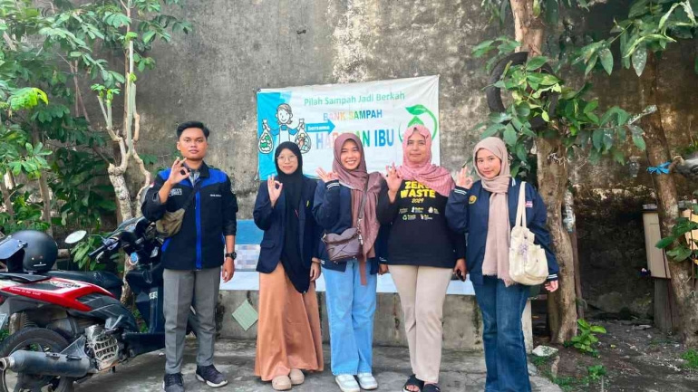
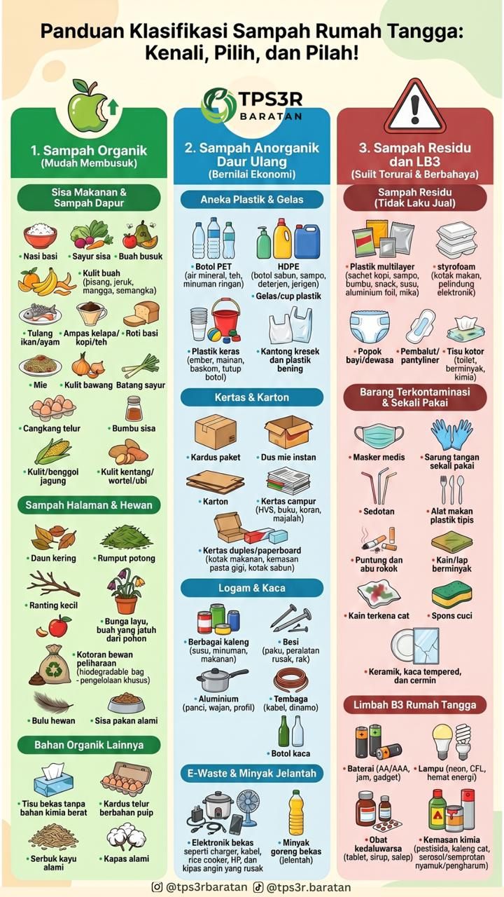
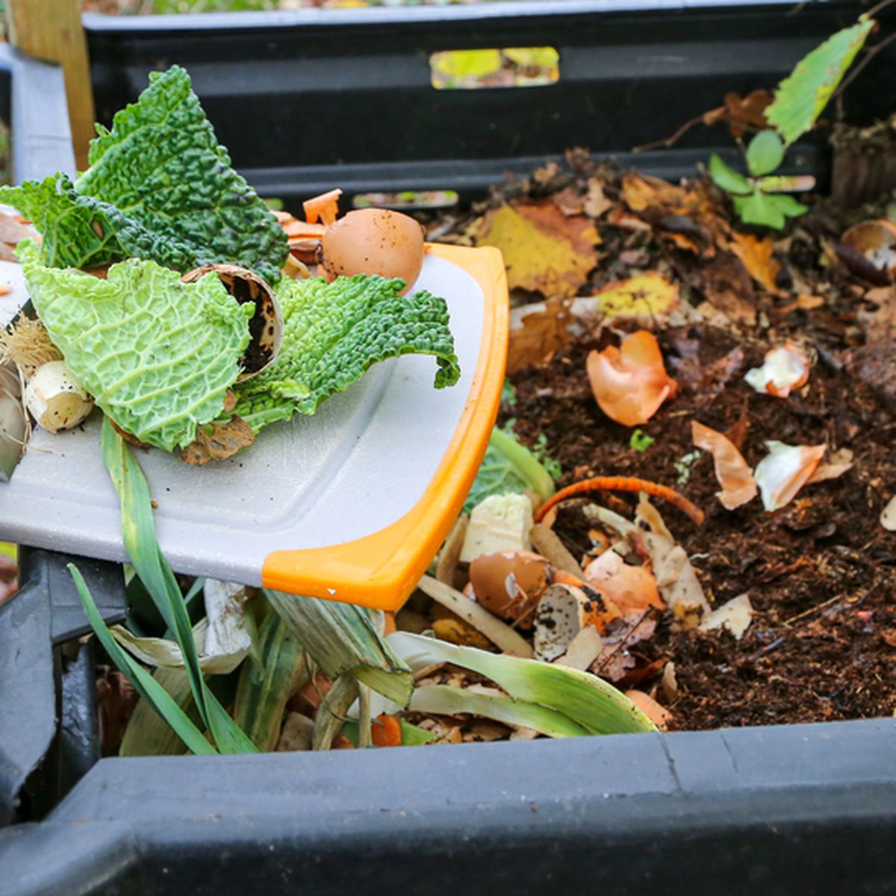
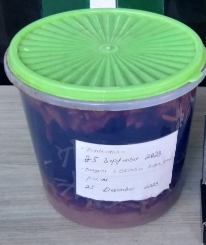
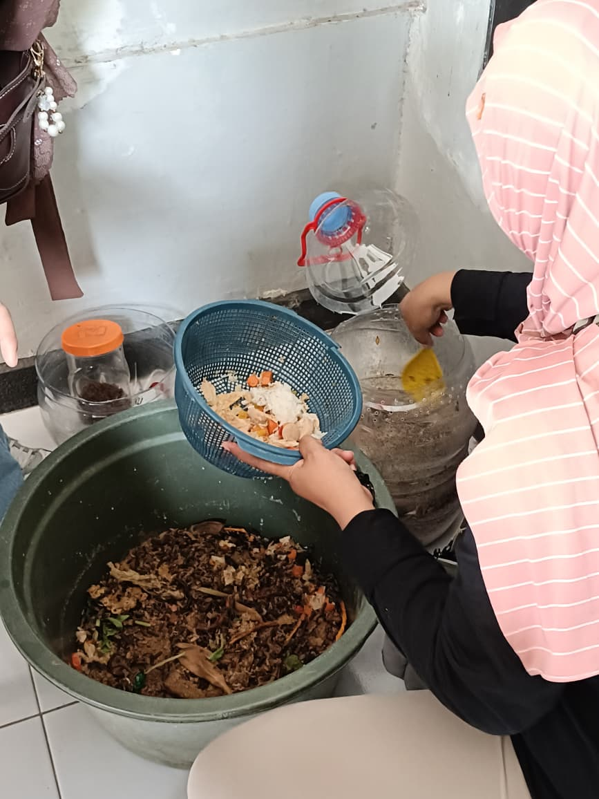

Mengurangi Sampah
Membantu mengurangi jumlah sampah yang dibuang secara langsung ke lingkungan maupun tempat pembuangan akhir.
MUESA Tegal Besar
Bersama MUESA Tegal Besar, mari mengubah sampah menjadi sesuatu yang lebih bermanfaat dan memiliki nilai ekonomi.
Tentang Kami

MUESA Tegal Besar hadir sebagai salah satu upaya masyarakat dalam menjaga kebersihan lingkungan serta meningkatkan kesadaran terhadap pentingnya pengelolaan sampah. MUESA merupakan tempat pengelolaan sampah yang menerapkan sistem pengumpulan, pemilahan, dan pemanfaatan sampah yang masih memiliki nilai guna dan nilai ekonomi. Melalui kegiatan ini, masyarakat dapat berperan aktif dalam mengurangi jumlah sampah yang dibuang ke lingkungan sekaligus mengubah sampah menjadi sesuatu yang lebih bermanfaat.
Selain membantu menjaga kebersihan lingkungan, MUESA Tegal Besar juga menjadi sarana edukasi bagi masyarakat untuk membiasakan diri memilah sampah berdasarkan jenisnya, seperti sampah organik dan anorganik. Sampah yang telah dipilah kemudian dapat dikelola, didaur ulang, atau dimanfaatkan kembali menjadi berbagai produk yang memiliki nilai tambah. Dengan adanya bank sampah, diharapkan tercipta lingkungan yang lebih bersih, sehat, dan berkelanjutan serta meningkatkan partisipasi masyarakat dalam pengelolaan sampah.
Sampah yang telah dikumpulkan dapat dipilah berdasarkan jenisnya dan kemudian dimanfaatkan kembali, didaur ulang, ataupun diolah menjadi berbagai produk yang memiliki nilai jual.
Pengertian
Bank Sampah merupakan tempat pengelolaan sampah yang menerapkan sistem pengumpulan, pemilahan, dan pemanfaatan sampah yang masih memiliki nilai guna maupun nilai ekonomi. Melalui kegiatan bank sampah, masyarakat dapat berperan aktif dalam memilah sampah sejak dari sumbernya sehingga sampah yang masih dapat dimanfaatkan tidak langsung dibuang ke lingkungan.
Sampah yang telah dikumpulkan dipisahkan berdasarkan jenisnya, seperti botol, gelas plastik, kertas, plastik, dan jenis sampah lainnya agar proses pengelolaannya menjadi lebih mudah. Pemilahan dilakukan untuk memisahkan sampah yang masih memiliki nilai guna dan dapat didaur ulang dari sampah yang sudah tidak dapat dimanfaatkan kembali. Dengan adanya proses pemilahan, sampah dapat dikelola dengan lebih teratur dan dapat dimanfaatkan kembali sebagai bahan untuk berbagai kebutuhan maupun produk daur ulang.
Melalui Bank Sampah Tegal Besar, masyarakat diharapkan semakin sadar bahwa sampah yang dipilah dan dikelola dengan baik dapat dimanfaatkan kembali serta membantu menjaga kebersihan lingkungan.
Tujuan Kami
Membantu mengurangi jumlah sampah yang dibuang secara langsung ke lingkungan maupun tempat pembuangan akhir.
Menciptakan lingkungan yang lebih bersih, sehat, nyaman, serta meningkatkan kepedulian masyarakat terhadap lingkungan.
Sampah yang masih dapat dimanfaatkan dapat diolah kembali sehingga menghasilkan produk yang memiliki nilai ekonomi.
Panduan Klasifikasi

PanduanPanduan Klasifikasi
Poster ini berisi panduan klasifikasi sampah rumah tangga yang dapat membantu masyarakat dalam mengelola sampah secara benar dan efisien.
Produk & Edukasi
EDUKASI PENGOLAHAN
Lilin aromaterapi merupakan salah satu produk kreatif yang dapat dibuat dengan memanfaatkan bahan yang tersedia di sekitar kita. Melalui proses sederhana, bahan tersebut dapat diolah menjadi produk yang memiliki nilai guna dan nilai ekonomi.
Video tutorial ini menjelaskan proses pembuatan lilin aromaterapi mulai dari persiapan bahan dan alat, proses pencampuran bahan, pemasangan sumbu, hingga proses pendinginan lilin sampai siap digunakan.
Siapkan bahan dan alat yang diperlukan.
Campurkan bahan dan tambahkan aroma sesuai kebutuhan.
Diamkan hingga lilin mengeras dan siap digunakan.
EDUKASI PENGOLAHAN
Lilin aromaterapi merupakan salah satu produk kreatif yang dapat dibuat dengan memanfaatkan bahan yang tersedia di sekitar kita. Melalui proses sederhana, bahan tersebut dapat diolah menjadi produk yang memiliki nilai guna dan nilai ekonomi.
Video tutorial ini menjelaskan proses pembuatan lilin aromaterapi mulai dari persiapan bahan dan alat, proses pencampuran bahan, pemasangan sumbu, hingga proses pendinginan lilin sampai siap digunakan.
Siapkan bahan dan alat yang diperlukan.
Campurkan bahan dan tambahkan aroma sesuai kebutuhan.
Diamkan hingga lilin mengeras dan siap digunakan.
Produk & Edukasi

OrganikPengolahan Sampah Organik
Kompos merupakan hasil pengolahan limbah organik rumah tangga seperti sisa sayuran, nasi basi, daun kering, dan bahan organik lainnya menjadi pupuk yang bermanfaat bagi tanaman.
Produk & Edukasi

OrganikPengolahan Fermentasi EkoEnzim Organik
Eko enzim merupakan cairan hasil fermentasi limbah organik rumah tangga, seperti sisa buah dan sayuran, dengan gula dan air. Eko enzim dapat dimanfaatkan sebagai bahan alami yang mendukung perawatan dan pertumbuhan tanaman.
Produk & Edukasi

LarvaPengolahan Larva
Maggot merupakan larva dari lalat tentara hitam yang dapat dimanfaatkan sebagai pakan ternak, pupuk organik, dan pengurai sampah organik. Maggot dapat membantu mengurangi jumlah sampah organik yang dibuang ke lingkungan serta menghasilkan produk yang memiliki nilai ekonomi.
Katalog Produk
Lihat berbagai informasi dan produk hasil pengelolaan Bank Sampah Tegal Besar melalui katalog kami.
Buka KatalogScan untuk membuka katalog produk Bank Sampah Tegal Besar.
Arahkan kamera HP ke QR Code